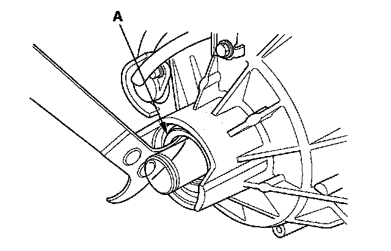

Side Case Oil Seal Replacement
Side Case Oil Seal ReplacementSpecial Tools Required
- Oil seal driver A 070AD-STK0110
- Oil seal driver B 070AD-STK0120
- Fork seal driver weight 07747-0010100
1. Remove the rear differential.
2. Remove the 40 x 55 x 7.5 mm dust seal (A) with a commercially available tool.

3. Remove the thrust washer.
4. Cut a slit at each position (4 place, 90 degrees apart) (A) on the 34.7 x 54 x 9 mm oil seal (B) then install 6 mm screw (C) (P/N 93901-16580) into the oil seal at each location. Remove the oil seal with pliers (D) and screw driver (E) as shown.
NOTE: Do not thread the 6 mm screws into the oil seal more than 5 mm (0.197 in.)
5. Install the new 34.7 x 54 x 9 mm oil seal (A) into the rear differential side case (B) with the fork seal driver weight (C) and oil seal driver A (D).
6. Install the thrust washer (A) then install the new 40 x 55 x 7.5 mm dust seal (B) with the fork seal driver weight (C) and oil seal driver B (D).
7. Install the rear differential.